<title>Guard rail edge cases</title>
<meta name="claude:viewport-fit-sides" content="cover">
<link rel="stylesheet" href="https://fonts.googleapis.com/css2?family=Inter:wght@400;600&family=Space+Grotesk:wght@600&display=swap">
<style>
/* Layout: one reading column; a list of every question at the top; each question a block — when it happens, today, recommended, pictures side by side, stacking on a phone */
:root{
  --bg:#f4f6f8; --panel:#ffffff; --ink:#151b22; --muted:#5a6573; --edge:#d6dde5; --accent:#0e8fb0; --rec:#0d7a4f; --new:#b7791f;
  --display:"Space Grotesk",system-ui,sans-serif; --body:"Inter",system-ui,sans-serif;
}
@media (prefers-color-scheme:dark){:root:not([data-theme="light"]){--bg:#0c0f13;--panel:#151a21;--ink:#e6ebf0;--muted:#97a3b0;--edge:#27303b;--accent:#38c6e8;--rec:#4fd39a;--new:#e9b04f;color-scheme:dark}}
:root[data-theme="dark"]{--bg:#0c0f13;--panel:#151a21;--ink:#e6ebf0;--muted:#97a3b0;--edge:#27303b;--accent:#38c6e8;--rec:#4fd39a;--new:#e9b04f;color-scheme:dark}
body{background:var(--bg);color:var(--ink);font-family:var(--body);line-height:1.5;padding-left:max(16px,env(safe-area-inset-left,0px));padding-right:max(16px,env(safe-area-inset-right,0px));padding-block:24px 48px}
main{max-width:1100px;margin:0 auto;display:grid;gap:30px}
h1,h2,h3{font-family:var(--display);text-wrap:balance;margin:0}
h1{font-size:1.7rem}
h2{font-size:1.2rem}
h3{font-size:1.35rem;padding-top:8px;border-top:2px solid var(--edge)}
p{margin:0;max-width:70ch}
.lede{color:var(--muted)}
.top{background:var(--panel);border:1px solid var(--edge);border-radius:10px;padding:16px 18px;display:grid;gap:12px}
.top ol{margin:0;padding-left:0;list-style:none;display:grid;gap:8px}
.top li{display:grid;grid-template-columns:2.6em 1fr;gap:4px}
.top li>b{color:var(--muted);font-variant-numeric:tabular-nums}
.top a{color:var(--accent)}
.rec{color:var(--rec);font-weight:600}
section{display:grid;gap:12px;scroll-margin-top:16px}
.label{font-size:.75rem;letter-spacing:.06em;text-transform:uppercase;color:var(--muted)}
.pair{display:grid;grid-template-columns:repeat(auto-fit,minmax(280px,1fr));gap:14px;align-items:start}
figure{margin:0;display:grid;gap:6px;min-width:0}
figure img{width:100%;border:1px solid var(--edge);border-radius:6px;cursor:zoom-in;background:#000}
figure.tall img{max-height:520px;object-fit:contain}
figcaption{font-size:.85rem;color:var(--muted)}
figcaption b{color:var(--ink)}
.words{background:var(--panel);border:1px solid var(--edge);border-radius:8px;padding:10px 14px;font-size:.92rem;display:grid;gap:4px}
.note{font-size:.88rem;color:var(--muted)}
.when{border-left:3px solid var(--accent);padding-left:10px}
.told{background:var(--panel);border:1px solid var(--edge);border-radius:10px;padding:14px 18px;display:grid;gap:8px}
.told ul{margin:0;padding-left:1.2em;display:grid;gap:6px}
.zoom{position:fixed;inset:0;background:rgba(0,0,0,.9);display:flex;align-items:center;justify-content:center;padding:max(12px,env(safe-area-inset-top,0px)) 12px max(12px,env(safe-area-inset-bottom,0px));z-index:20;overflow:auto}
.zoom img{max-width:100%;max-height:100%;object-fit:contain}
.zoom.big{align-items:flex-start;justify-content:flex-start}
.zoom.big img{max-width:none;max-height:none}
</style>

<main>
  <header style="display:grid;gap:8px">
    <h1>The guard rail: the cases your rulings do not name</h1>
    <p class="lede">You ruled the guard rail on 24 Nov: with a window open, or a change not saved, picking another squadron or changing the view is refused with the grey "Blocked:" note. Before it is built, two readers listed every way it could go wrong, and each case below was then pressed on the app as it is today. These are the cases where your rulings do not say what should happen. Nothing here is built. Every picture is the real app: "Today" is what happens now, "Drawn" is the note or question added on top. Tap a picture to enlarge it, tap again for full size.</p>
    <p class="lede">Every case touches only a person who works across two squadrons (a Plan or View of another squadron, or a master admin), unless it says otherwise. In the examples Saber is a master admin of 142, Hunter is 142's admin with Plan of 149, Ranger is a member of 142 with View of 149.</p>
  </header>

  <div class="top">
    <div class="label">To answer — reply "as recommended for all", or name the ones you want differently</div>
    <p><b>Group A — needed before the first build (the guard itself).</b></p>
    <ol>
      <li><b>A1</b><span><a href="#a1">Four small pop-ups</a> that already close when you press the top bar. <span class="rec">Recommended: they keep closing, the pick goes through.</span></span></li>
      <li><b>A2</b><span><a href="#a2">ALL AVAIL and Changes</a>, where nothing is typed. <span class="rec">Recommended: refused like any other window.</span></span></li>
      <li><b>A3</b><span><a href="#a3">The Scheduler Board</a> and its own bell. <span class="rec">Recommended: the board is not a window; as today.</span></span></li>
      <li><b>A4</b><span><a href="#a4">Edit mode on Logic and Quals</a>. <span class="rec">Recommended: the pick goes through and the edit mode ends.</span></span></li>
      <li><b>A5</b><span><a href="#a5">Admin → Users</a>: what counts besides typed words in an opened row. <span class="rec">Recommended: any unsaved change in a row, Give access and + New squadron count; Add a person does not.</span></span></li>
      <li><b>A6</b><span><a href="#a6">The row's note</a>: "save or cancel the open row", not "close the open row". <span class="rec">Recommended: the new words.</span></span></li>
      <li><b>A7</b><span><a href="#a7">A window left open on a page you are no longer looking at</a>. <span class="rec">Recommended: refused, the note saying where the window is.</span></span></li>
      <li><b>A8</b><span><a href="#a8">A tap on the bell itself</a> that would change squadron. <span class="rec">Recommended: refused, "…then press the bell again."</span></span></li>
      <li><b>A9</b><span><a href="#a9">A save still going</a> when you pick. <span class="rec">Recommended: the pick waits for the save.</span></span></li>
      <li><b>A10</b><span><a href="#a10">Two reasons at once</a>. <span class="rec">Recommended: the note names the window first, then the open row, then Retry.</span></span></li>
      <li><b>A11</b><span><a href="#a11">A refused bell line</a>. <span class="rec">Recommended: it stays unread and the list stays open.</span></span></li>
      <li><b>A12</b><span><a href="#a12">The squadron list</a> with a window open. <span class="rec">Recommended: the list still opens; the squadron you press is refused.</span></span></li>
      <li><b>A13</b><span><a href="#a13">The note for a change not saved</a>. <span class="rec">Recommended: "Blocked: press Retry to save your changes, then pick 149."</span></span></li>
      <li><b>A14</b><span><a href="#a14">Where the note stands</a> on a tablet and a phone on its side. <span class="rec">Recommended: under the control whenever the top bar shows the squadron picker.</span></span></li>
      <li><b>A15</b><span><a href="#a15">A phone with Inputs settings open</a>: the note at the foot or at the top. <span class="rec">Recommended: at the foot, as you ruled.</span></span></li>
      <li><b>A16</b><span><a href="#a16">The ☰ menu after a refused pick</a>. <span class="rec">Recommended: it closes.</span></span></li>
      <li><b>A17</b><span><a href="#a17">Your own input on the other squadron's Inputs page</a>. <span class="rec">Recommended: it opens live, as today.</span></span></li>
      <li><b>A18</b><span><a href="#a18">"Check my quals"</a>, a button that brings your own squadron back. <span class="rec">Recommended: refused like a pick when a window is open or a change is not saved.</span></span></li>
      <li><b>A19</b><span><a href="#a19">A holiday's bell line while you view another squadron</a>. <span class="rec">Recommended: your own squadron comes into view first.</span></span></li>
      <li><b>A20</b><span><a href="#a20">The Tracker's question at the member-view switch on your own squadron</a>. <span class="rec">Recommended: asked always, as drawn.</span></span></li>
    </ol>
    <p><b>Group B — needed before the later builds (Logout, Undo, the refresh card). These can wait.</b></p>
    <ol>
      <li><b>B1</b><span><a href="#b1">Logout while a change is not saved</a>: the draft you read said "lose it", which is not true. <span class="rec">Recommended: "Your last changes aren't saved yet. Log out anyway?"</span></span></li>
      <li><b>B2</b><span><a href="#b2">Logout with an input open</a>: the question's words. <span class="rec">Recommended: "Log out and lose them?"</span></span></li>
      <li><b>B3</b><span><a href="#b3">Logout with an Admin → Users row open</a>. <span class="rec">Recommended: asked, as drawn.</span></span></li>
      <li><b>B4</b><span><a href="#b4">Logout over a window that has no question of its own</a>. <span class="rec">Recommended: one question that names the window.</span></span></li>
      <li><b>B5</b><span><a href="#b5">Reaching Logout on a phone</a> with a window open. <span class="rec">Recommended: the top bar stays in reach above the window.</span></span></li>
      <li><b>B6</b><span><a href="#b6">Undo with changes waiting on two other squadrons</a>. <span class="rec">Recommended: "Pick 142 or 149 to undo your changes there."</span></span></li>
      <li><b>B7</b><span><a href="#b7">Undo of "+ New squadron"</a> while that squadron is in view. <span class="rec">Recommended: it waits on the squadron you made it from.</span></span></li>
      <li><b>B8</b><span><a href="#b8">The greyed Undo on a phone</a>: its reason cannot be read. <span class="rec">Recommended: a tap shows the reason.</span></span></li>
      <li><b>B9</b><span><a href="#b9">The refresh card when nothing is open</a>. <span class="rec">Recommended: shown all the same.</span></span></li>
      <li><b>B10</b><span><a href="#b10">The refresh card's words</a>, true on any day it is read. <span class="rec">Recommended: "You are 149's now".</span></span></li>
      <li><b>B11</b><span><a href="#b11">Refresh while a save is waiting</a>. <span class="rec">Recommended: Refresh tries the save once first.</span></span></li>
      <li><b>B12</b><span><a href="#b12">Five small cases</a> where nothing is lost today. <span class="rec">Recommended: all left as they are.</span></span></li>
    </ol>
  </div>

  <h3>Group A — before the first build</h3>

  <section id="a1">
    <h2>A1. Four small pop-ups that already close when you press the top bar</h2>
    <p class="when"><b>When this happens</b>: Traffic, Jump to a date, a day's details (ⓘ) or a document is open, and you pick the other squadron. Any day, for anyone working across two squadrons.</p>
    <p><b>Today</b>: these four already close by themselves at any press on the top bar, and the pick goes through in the same press. Nothing typed is lost: Traffic's one box (the airspace line) is saved as it is typed, and the other three have nothing to type.</p>
    <p class="rec">Recommended: leave them as today. They close and the pick goes through.</p>
    <p class="note">The other choice: they refuse like every other window, so a pick needs them closed first. One exception either way: a document opened over an input window. The input window is still open underneath, so the pick is refused because of it.</p>
    <div class="pair">
      <figure>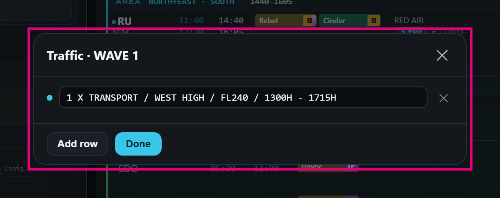<figcaption><b>Today</b>: Traffic open. The top bar is free above it.</figcaption></figure>
    </div>
  </section>

  <section id="a2">
    <h2>A2. ALL AVAIL and the Changes window</h2>
    <p class="when"><b>When this happens</b>: the "Who's available" window or the Changes window is open on Edit Schedule and you pick the other squadron or switch view.</p>
    <p><b>Today</b>: each closes without a word and the pick goes through. Nothing is typed in either, so nothing is lost. On a phone Changes can be folded down to a slim bar; that closes the same way.</p>
    <p class="rec">Recommended: they refuse like any other window. One rule a person can learn: a window you opened stays until you close it. The four pop-ups of A1 are the only ones that close themselves, as they do today at any press on the bar.</p>
    <p class="note">The cost: one more press to close them before a pick. The other choice: they close by themselves as today.</p>
    <div class="pair">
      <figure class="tall">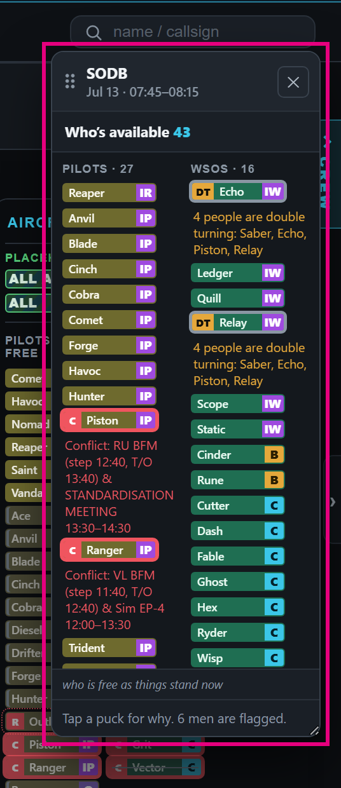<figcaption><b>Today</b>: ALL AVAIL's window.</figcaption></figure>
      <figure class="tall">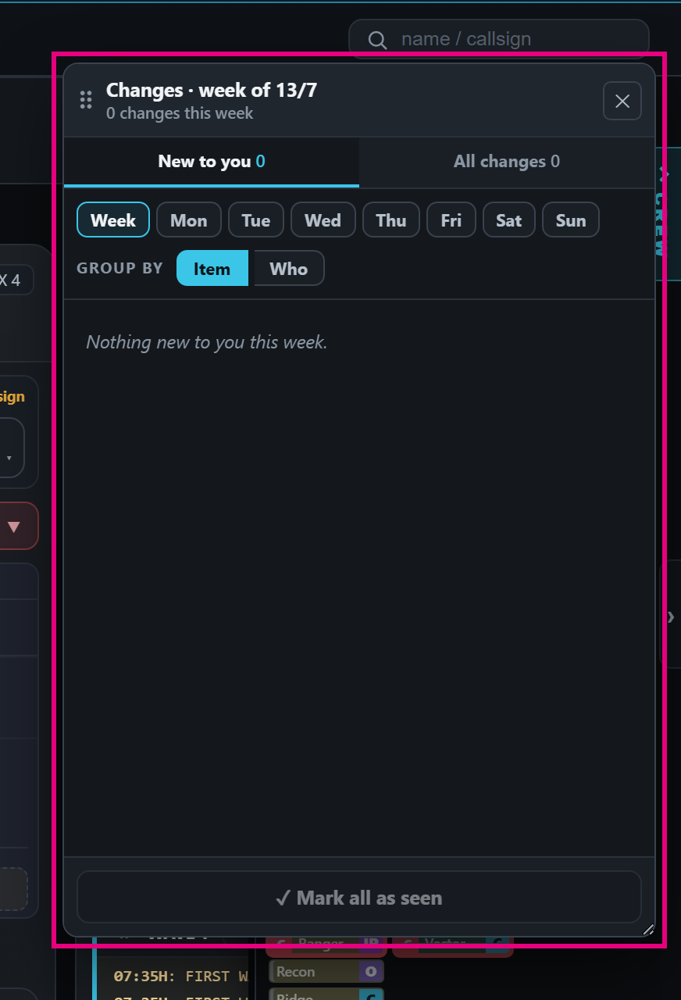<figcaption><b>Today</b>: Changes, opened out.</figcaption></figure>
      <figure>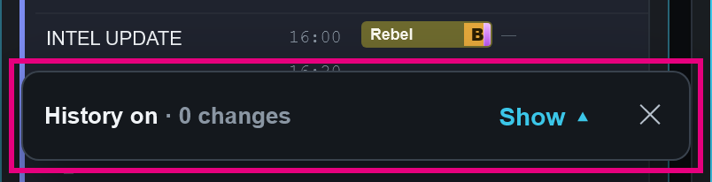<figcaption><b>Today, phone</b>: Changes folded to its bar.</figcaption></figure>
    </div>
  </section>

  <section id="a3">
    <h2>A3. The Scheduler Board</h2>
    <p class="when"><b>When this happens</b>: Hunter has 149's board open (a day opened from Edit Schedule) and presses a line in the board's own bell that belongs to 142.</p>
    <p><b>Today</b>: the board covers the whole screen, so the squadron picker and the badge cannot be reached from it. Its own bell can. Pressing a 142 line there closes the board, moves him to 142 and opens the input. Nothing is said, and nothing is lost: everything done on the board is saved as it is done.</p>
    <p class="rec">Recommended: the board by itself is not "a window" for the guard. It behaves as today.</p>
    <p class="note">With the board's cancel-reason box or its "Sort all" question up, the board's bell is covered too, so there is nothing to press and nothing to decide. The other choice: the board refuses the line until it is closed with ✓ Done.</p>
    <div class="pair">
      <figure><figcaption><b>Today</b>: the board's own bell, a 142 line in its list.</figcaption></figure>
      <figure><figcaption><b>Today</b>: after the press the bar reads 142.</figcaption></figure>
    </div>
  </section>

  <section id="a4">
    <h2>A4. Edit mode on Logic and on Quals</h2>
    <p class="when"><b>When this happens</b>: Saber is editing 142's Logic (or ticking Quals) and picks 149 without pressing Done.</p>
    <p><b>Today</b>: every change in edit mode is saved as it is made, into 142. Nothing is lost at the pick. But 149's page then opens already in edit mode, with Done showing, though he never pressed Edit there.</p>
    <p>Example: he changes Crew rest from 12h to 13h on 142 and picks 149. 142 keeps 13h, 149 still reads 12h, and 149's Logic is open for editing.</p>
    <p class="rec">Recommended: the pick goes through, and the edit mode ends. 149's page opens as it normally does, not in edit mode.</p>
    <p class="note">The other choice: refuse the pick until Done is pressed. Found on the way and filed as a fault, not a question: after switching to the member view, Quals still shows Done.</p>
    <div class="pair">
      <figure><figcaption><b>Today</b>: Logic in edit mode on 142.</figcaption></figure>
      <figure><figcaption><b>Today</b>: after the pick, 149's Logic shows Done too.</figcaption></figure>
    </div>
  </section>

  <section id="a5">
    <h2>A5. Admin → Users: what counts besides typed words in an opened row</h2>
    <p class="when"><b>When this happens</b>: an admin of two squadrons is part-way through something on Admin → Users and picks the other squadron or switches to the member view. You ruled that an opened row with typing in it refuses the pick. The page has other half-done states your ruling does not name.</p>
    <p><b>Today</b>, pressed for each:</p>
    <div class="words">
      <div><b>A row opened, its Role changed, nothing typed</b>: the pick goes through and the Role is silently put back. The change is lost, nothing asked.</div>
      <div><b>An archived man's row, his name edited</b>: the same. The edit is lost.</div>
      <div><b>The "Give access" form with words typed</b>: the words survive a pick (the form is there again on coming back) but are lost at the member-view switch.</div>
      <div><b>"+ New squadron" with a number typed</b>: the form stays open on 149 with the number still in it. Lost at the member-view switch.</div>
      <div><b>"Add a person" with a name typed</b>: the name stays, and its Home squadron box changes to 149 by itself. Lost at the member-view switch.</div>
      <div><b>A row left open while you look at another Admin section</b> (Squadrons): it is still open with its typing, out of sight. A pick from there loses the typing.</div>
    </div>
    <p class="rec">Recommended: any unsaved change in an opened row counts (a changed Role or name as well as typed words), and so do the Give access form and "+ New squadron" once something is typed in them. "Add a person" does not count and stays as today.</p>
    <p class="note">Why not Add a person: it has no Cancel button, so the note could only tell you to finish adding the person or empty the boxes by hand. Its typing already survives a pick, and its Home squadron box shows the new squadron in plain sight. If you want it counted, it needs a Cancel button, which I would draw for you first. A row out of sight on another Admin section counts too; its note says where it is (A6).</p>
    <div class="pair">
      <figure>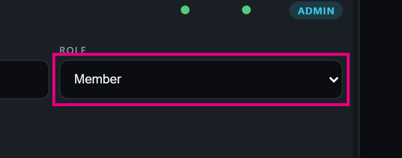<figcaption><b>Today</b>: Hunter's row open, Role changed to Member, not saved.</figcaption></figure>
      <figure>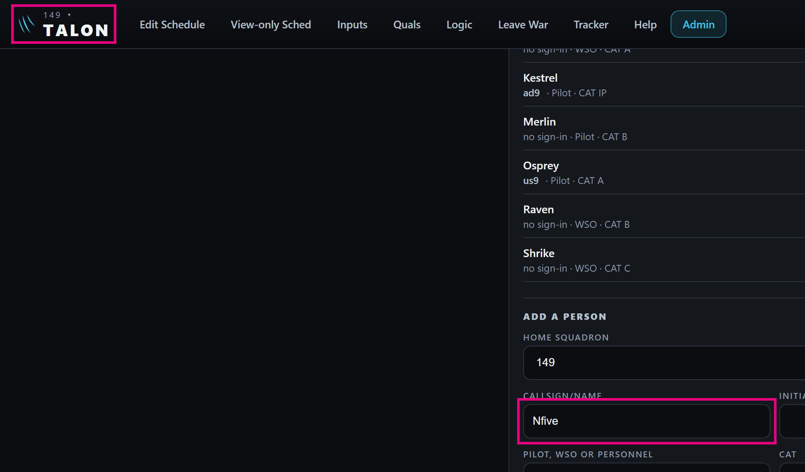<figcaption><b>Today</b>: after the pick, Add a person still holds the typed name, and its Home squadron now reads 149.</figcaption></figure>
      <figure>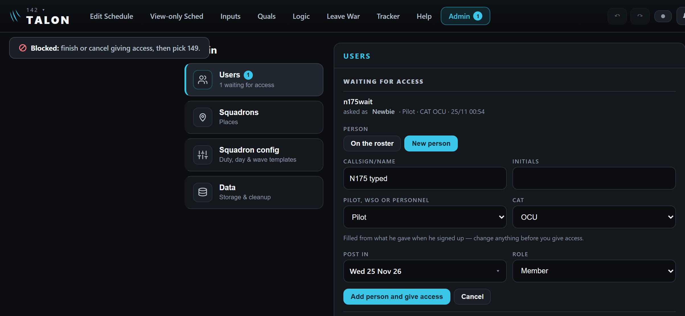<figcaption><b>Drawn</b>: the Give access form with words typed, 149 picked.</figcaption></figure>
    </div>
  </section>

  <section id="a6">
    <h2>A6. The row's note: "save or cancel the open row"</h2>
    <p class="when"><b>When this happens</b>: the guard refuses a pick because an Admin → Users row is open with a change in it.</p>
    <p>The draft you approved read "Blocked: close the open row, then pick 149." A fresh reader checked it against the row itself: the row has no Close and no ✕. It has Save and Cancel. The most natural way to "close" it (tap it shut, or Escape) throws the typing away with nothing asked, which is the very thing your ruling was made to stop.</p>
    <p class="rec">Recommended: the note names the row's own two buttons.</p>
    <div class="words">
      <div>Pick: <b>Blocked:</b> save or cancel the open row, then pick 149.</div>
      <div>The member view: <b>Blocked:</b> save or cancel the open row, then switch to the member view.</div>
      <div>A bell line: <b>Blocked:</b> save or cancel the open row, then press this line again.</div>
      <div>The row is on another Admin section, out of sight: <b>Blocked:</b> save or cancel the open row on Users, then pick 149.</div>
      <div>Give access (A5): <b>Blocked:</b> finish or cancel giving access, then pick 149.</div>
      <div>+ New squadron (A5): <b>Blocked:</b> save or cancel the new squadron, then pick 149.</div>
    </div>
    <div class="pair">
      <figure><figcaption><b>Drawn, desktop</b>: under the squadron picker; the open row with its Save and Cancel below.</figcaption></figure>
      <figure class="tall"><figcaption><b>Drawn, phone</b>: at the foot, the row in sight.</figcaption></figure>
    </div>
  </section>

  <section id="a7">
    <h2>A7. A window left open on a page you are no longer looking at</h2>
    <p class="when"><b>When this happens</b>: Saber opens My leave on the Leave War, presses the Inputs tab without closing it, and picks 149. The Leave War keeps its windows open while you look at another page.</p>
    <p><b>Today</b>: at the pick nothing on the Inputs page shows that a window is open anywhere, and nothing is said. Back on the Leave War the window is still there, greyed, with "This is 142's. You picked 149 — close this to go on."; back on 142 it is live again. The Tracker's marking window and Edit chart layout, left the same way, close by themselves at the pick.</p>
    <p class="rec">Recommended: the pick is refused, and the note says where the window is.</p>
    <div class="words">
      <div><b>Blocked:</b> close the open window on the Leave War, then pick 149.</div>
      <div><b>Blocked:</b> close the open window on the Tracker, then pick 149.</div>
    </div>
    <p class="note">The other choice: a window on a page you are not looking at does not count, and the pick goes through with the window dealt with as it is today (greyed). One limit either way, from the plan's readers: if the squadron in view no longer offers that page at all, the window cannot be reached to close it, so it must not count then, or the person would be stuck.</p>
    <div class="pair">
      <figure>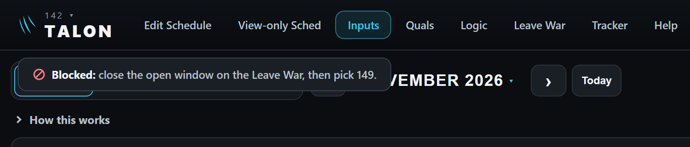<figcaption><b>Drawn</b>: on Inputs, My leave still open on the Leave War, 149 picked.</figcaption></figure>
    </div>
  </section>

  <section id="a8">
    <h2>A8. A tap on the bell itself that would change squadron</h2>
    <p class="when"><b>When this happens</b>: Saber is on 142 with an input window open. Someone has asked for access to 149, which lights his bell. A tap on a bell lit this way acts at once, with no list: it takes him to 149's Admin → Users.</p>
    <p><b>Today</b>: the tap moves him to 149 and the 142 window is left greyed behind him.</p>
    <p class="rec">Recommended: refused like a bell line, the note under the bell. The bell stays lit, so the second press works once the window is closed.</p>
    <div class="words">
      <div><b>Blocked:</b> close the open window, then press the bell again.</div>
      <div>With a row open, or a change not saved: "…save or cancel the open row, then press the bell again." / "…press Retry to save your changes, then press the bell again."</div>
    </div>
    <div class="pair">
      <figure>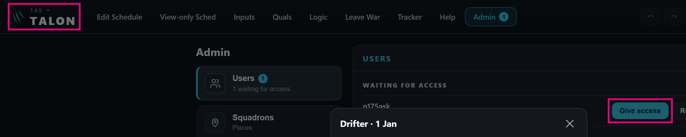<figcaption><b>Today</b>: after the tap the bar reads 149; the 142 window is greyed with its band.</figcaption></figure>
      <figure><figcaption><b>Drawn</b>: the note under the bell, the window still live.</figcaption></figure>
    </div>
  </section>

  <section id="a9">
    <h2>A9. A save still going when you pick</h2>
    <p class="when"><b>When this happens</b>: you press Save on an input and pick the other squadron within about a third of a second, while the sign still says "Saving…". Rare, and it only matters if that save then fails.</p>
    <p><b>Today</b>: the pick goes through. If the save then fails, "Not saved — keep this page open" stands on 149, and Retry pressed there saves 142's input. That is the case you ruled out for a change already showing "Not saved".</p>
    <p class="rec">Recommended: the pick waits the moment it takes for the save to finish. If it saved, the pick goes through. If it failed, the pick is refused with the Retry note (A13).</p>
    <p class="note">The cost: on a slow connection the pick can take a moment longer with nothing on screen to say why. The other choice: the pick goes through as today, and a save that fails a moment later shows 142's band on 149.</p>
    <div class="pair">
      <figure><figcaption><b>Today</b>: the bar reads 149, and "Not saved" is about 142's input.</figcaption></figure>
    </div>
  </section>

  <section id="a10">
    <h2>A10. Two reasons at once</h2>
    <p class="when"><b>When this happens</b>: a window is open and a change is also showing "Not saved" when you pick. Rare.</p>
    <p class="rec">Recommended: one note at a time. It names the window first; after the window is closed, the next press names the open row if there is one, then Retry. A refusal always comes before the Tracker's unsaved-edits question, so you are never asked to discard chart edits only to be refused.</p>
    <div class="pair">
      <figure>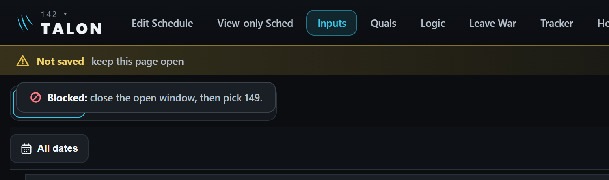<figcaption><b>Drawn</b>: a window open and "Not saved" showing. The note asks for the window first.</figcaption></figure>
    </div>
  </section>

  <section id="a11">
    <h2>A11. A refused bell line</h2>
    <p class="when"><b>When this happens</b>: Hunter is on 149 with a window open and presses a 142 line in his bell.</p>
    <p><b>Today</b> (with no guard): pressing a line marks it read and closes the list as it takes him there.</p>
    <p class="rec">Recommended: when the press is refused, the line stays unread and the list stays open, the note just under it. The line is still waiting for him after he closes the window. A refused press never goes through later by itself; he presses again.</p>
    <div class="pair">
      <figure><figcaption><b>Today</b>: the line before the press, unread.</figcaption></figure>
      <figure><figcaption><b>Today</b>: after a press that went through, read.</figcaption></figure>
      <figure><figcaption><b>The drawing you approved</b>: the list still open, the note under it.</figcaption></figure>
    </div>
  </section>

  <section id="a12">
    <h2>A12. The squadron list with a window open</h2>
    <p class="when"><b>When this happens</b>: a window is open and you press the squadron picker.</p>
    <p class="rec">Recommended: the list still opens. Pressing a squadron in it is what gets refused, and the list closes. That way the note can name the squadron you chose ("…then pick 149").</p>
    <p class="note">The other choice: the picker itself is refused and no list opens. The note could then not name a squadron.</p>
    <div class="pair">
      <figure><figcaption><b>The drawing you approved</b>: 149 was pressed in the list; the list has closed and the note names 149.</figcaption></figure>
    </div>
  </section>

  <section id="a13">
    <h2>A13. The note for a change not saved</h2>
    <p class="when"><b>When this happens</b>: "Not saved — keep this page open" is showing and you pick the other squadron, switch view or press a bell line. You ruled this refused; the words were a draft.</p>
    <p class="rec">Recommended:</p>
    <div class="words">
      <div><b>Blocked:</b> press Retry to save your changes, then pick 149.</div>
      <div>"…then switch to the member view." / "…then switch back to the admin view." / "…then press this line again."</div>
    </div>
    <p class="note">"Changes", not "change": the app cannot tell whether one change or several are waiting. On a phone the pick form takes two lines. The note sits under the band so it never covers the Retry it points to.</p>
    <div class="pair">
      <figure><figcaption><b>Drawn, desktop</b>: under the band. Retry is at the right end of the same band.</figcaption></figure>
      <figure class="tall">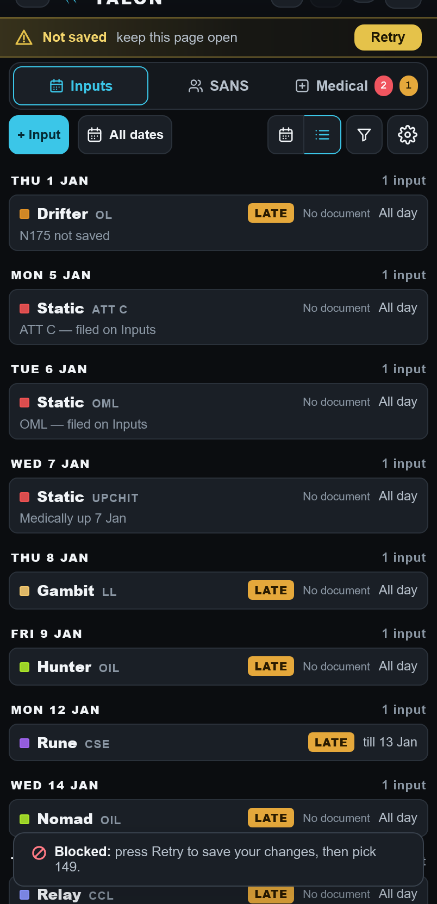<figcaption><b>Drawn, phone</b>: the band at the top, the note at the foot, two lines.</figcaption></figure>
    </div>
  </section>

  <section id="a14">
    <h2>A14. Where the note stands on a tablet and a phone held on its side</h2>
    <p class="when"><b>When this happens</b>: you ruled the note under the control on a desktop and at the foot on a phone. A small tablet upright and a phone on its side are in between: both show the desktop's top bar with the squadron picker in it.</p>
    <p class="rec">Recommended: one rule. Where the top bar shows the squadron picker, the note drops under what you pressed. It goes to the foot only when the press was inside the ☰ menu, which is an upright phone.</p>
    <p class="note">The other choice: at the foot on anything smaller than a desktop. On a phone on its side the foot note lies over the open input window's Delete button while it shows.</p>
    <div class="pair">
      <figure><figcaption><b>Drawn, tablet, recommended</b>: under the picker.</figcaption></figure>
      <figure><figcaption><b>Drawn, tablet</b>: at the foot.</figcaption></figure>
      <figure>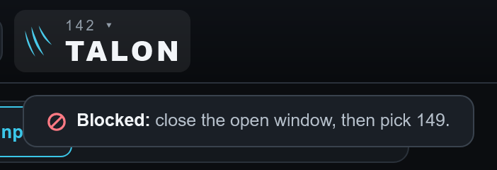<figcaption><b>Drawn, phone on its side, recommended</b>: under the picker.</figcaption></figure>
      <figure><figcaption><b>Drawn, phone on its side</b>: at the foot, over Delete.</figcaption></figure>
    </div>
  </section>

  <section id="a15">
    <h2>A15. A phone with Inputs settings or the Calendar window open</h2>
    <p class="when"><b>When this happens</b>: on an upright phone these two windows leave the top bar free, so the squadron can be picked from ☰ over them. Two of your rulings meet here. On 10 Oct you ruled that while such a window is open a passing note stands at the top, clear of the window's buttons. On 24 Nov you ruled the guard's note at the foot on a phone.</p>
    <p><b>Pressed</b>: at the top the note lies over the whole top bar, the ☰ and the squadron control it is telling you about. At the foot it covers none of the window's buttons; the window stands mid-screen.</p>
    <p class="rec">Recommended: at the foot, as your later ruling says.</p>
    <div class="pair">
      <figure><figcaption><b>Drawn, recommended</b>: at the foot.</figcaption></figure>
      <figure>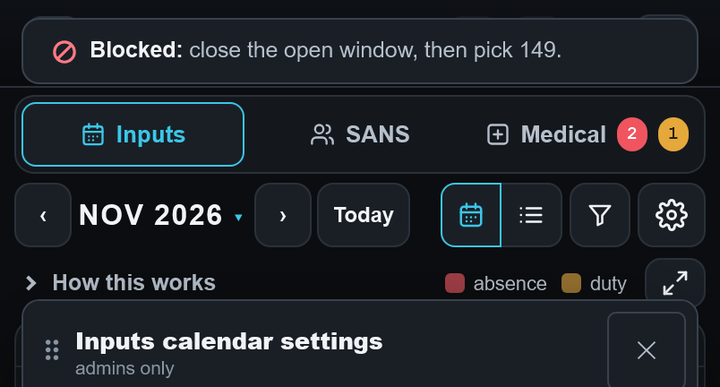<figcaption><b>Drawn</b>: at the top, over the top bar.</figcaption></figure>
    </div>
  </section>

  <section id="a16">
    <h2>A16. The ☰ menu after a refused pick</h2>
    <p class="when"><b>When this happens</b>: on a phone you open ☰, open the squadron list and press 149 while a window is open behind the menu.</p>
    <p><b>Today</b>: after a pick that goes through, the menu stays open, now showing 149.</p>
    <p class="rec">Recommended: after a refused pick the menu closes, so the note and the window it asks you to close are both in sight.</p>
    <div class="pair">
      <figure class="tall"><figcaption><b>Today</b>: the menu still open after a pick.</figcaption></figure>
      <figure class="tall"><figcaption><b>Drawn</b>: the menu closed after the refusal, the note at the foot.</figcaption></figure>
    </div>
  </section>

  <section id="a17">
    <h2>A17. Your own input, shown on the other squadron's Inputs page</h2>
    <p class="when"><b>When this happens</b>: Hunter is 142's and holds Plan of 149. With 149 picked, 149's Inputs page lists his own inputs among 149's, because they are about him. He taps one.</p>
    <p><b>Today</b>: it opens live under a bar reading 149. Save changes his 142 input and Delete removes it.</p>
    <p class="rec">Recommended: as today. It is his own input, and the page lists it on purpose, so it opens live wherever he sees it.</p>
    <p class="note">The other choice: it opens greyed ("This is 142's") and he must pick 142 to change it. The plan's readers found that this would trap one man: someone who has since moved to 149 could then never answer the OIL question on last weekend's 142 duty, and his bell would stay lit for good.</p>
    <div class="pair">
      <figure class="tall">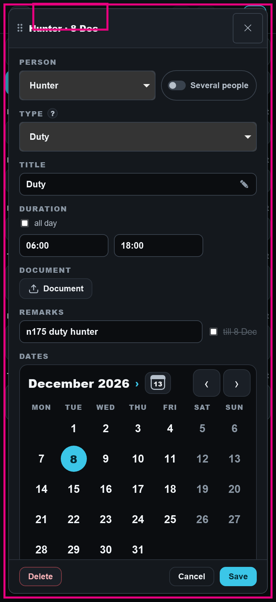<figcaption><b>Today, phone</b>: his own 8 Dec input open and live; the bar reads 149.</figcaption></figure>
    </div>
  </section>

  <section id="a18">
    <h2>A18. A button that brings your own squadron back</h2>
    <p class="when"><b>When this happens</b>: Ranger, a member with View of 149, has 149 picked. He presses something that opens one of his own pages, which 149 does not offer him. The one such button found is "Check my quals" on the "Welcome back" card.</p>
    <p><b>Today</b>: the bar goes back to 142 and his Quals page opens, without a word. With "Not saved" showing, the same happens and the band comes along.</p>
    <p class="rec">Recommended: with nothing open it works as today. With a window open or a change not saved it is refused like a pick, the note naming the button.</p>
    <div class="words">
      <div><b>Blocked:</b> press Retry to save your changes, then press Check my quals again.</div>
      <div><b>Blocked:</b> close the open window, then press Check my quals again.</div>
    </div>
    <div class="pair">
      <figure>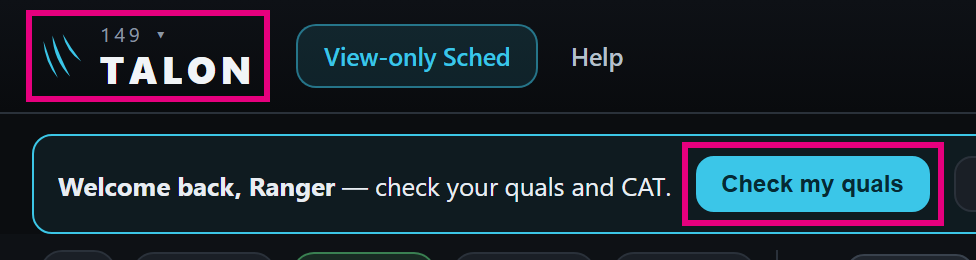<figcaption><b>Today</b>: the card on 149.</figcaption></figure>
      <figure>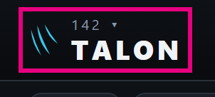<figcaption><b>Today</b>: after the press the bar reads 142.</figcaption></figure>
    </div>
  </section>

  <section id="a19">
    <h2>A19. A holiday's bell line while you are looking at another squadron</h2>
    <p class="when"><b>When this happens</b>: Hunter is 142's admin with View of 149 and has 149 picked. A day has been made a holiday on 142, so his bell holds "1 input needs an OIL answer". He taps it.</p>
    <p><b>Today</b>: 142's OIL list opens over 149's View-only Sched, the bar still reading 149. Answering and saving there writes 142's input.</p>
    <p class="rec">Recommended: 142 comes into view first, then the list opens, so the bar says whose list it is. (If a window is open or a change not saved, the tap is refused like any bell line to another squadron.)</p>
    <div class="pair">
      <figure class="tall">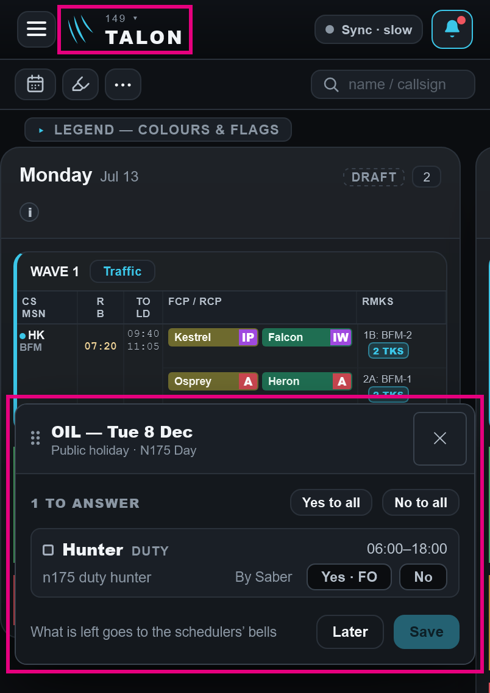<figcaption><b>Today, phone</b>: 142's OIL list, under a bar reading 149.</figcaption></figure>
    </div>
  </section>

  <section id="a20">
    <h2>A20. The Tracker's question at the member-view switch, on your own squadron</h2>
    <p class="when"><b>When this happens</b>: Saber, on 142, has an unsaved chart edit on the Tracker (a new event not yet saved) and presses his badge for the member view. You ruled that unsaved chart edits are asked about at the view switch, as a pick asks today.</p>
    <p><b>Today</b>: nothing is asked. On his own squadron the edit is still there in the member view, "Save changes" is still offered there and saves 142's chart, and the edit is still there on switching back. So here, unlike at a pick, nothing would be lost by not asking. (Moving a ball is saved at once and is never an unsaved edit.)</p>
    <p class="rec">Recommended: asked always, both ways, as drawn for you on 24 Nov. One rule, and it ends the odd state of saving the chart from the member view.</p>
    <p class="note">Its cost: a "Discard them" pressed here throws away edits the switch itself would not have touched. The other choice: asked only where the switch would move the Tracker to another squadron.</p>
    <div class="pair">
      <figure><figcaption><b>Today, phone</b>: in the member view, "Save changes" still offered.</figcaption></figure>
      <figure><figcaption><b>The drawing you saw on 24 Nov</b>: the question at the switch.</figcaption></figure>
    </div>
  </section>

  <h3>Group B — before the later builds</h3>

  <section id="b1">
    <h2>B1. Logout while a change is not saved</h2>
    <p class="when"><b>When this happens</b>: "Not saved — keep this page open" is showing and you press Logout. A bad connection, most likely at a shared computer.</p>
    <p><b>Today</b>: nothing is asked, and nothing is lost. The sign-in screen comes up with the band and Retry still over it. The next sign-in waits ("The last change has not saved yet — check the connection. Sign in waits until it saves."). When Retry gets through, the change is saved and the screen says "Saved. Press Sign in again."</p>
    <p>You ruled that Logout asks here. The draft question you read said "Log out and lose it?". That is not what the app does, and I do not recommend changing the app to make it true.</p>
    <p class="rec">Recommended: the question says what really happens.</p>
    <div class="words">
      <div>Your last changes aren't saved yet. Log out anyway? — <b>Log out</b> · <b>Stay</b></div>
    </div>
    <p class="note">The other choice: Logout throws the waiting change away, with "Your last changes aren't saved. Log out and lose them?" — "Discard and log out" · "Stay". That would be a new way to lose work.</p>
    <div class="pair">
      <figure><figcaption><b>Drawn, recommended</b>: nothing is lost, so "Log out" is a plain button.</figcaption></figure>
      <figure><figcaption><b>Drawn, the other choice</b>: the change would be thrown away.</figcaption></figure>
      <figure class="tall">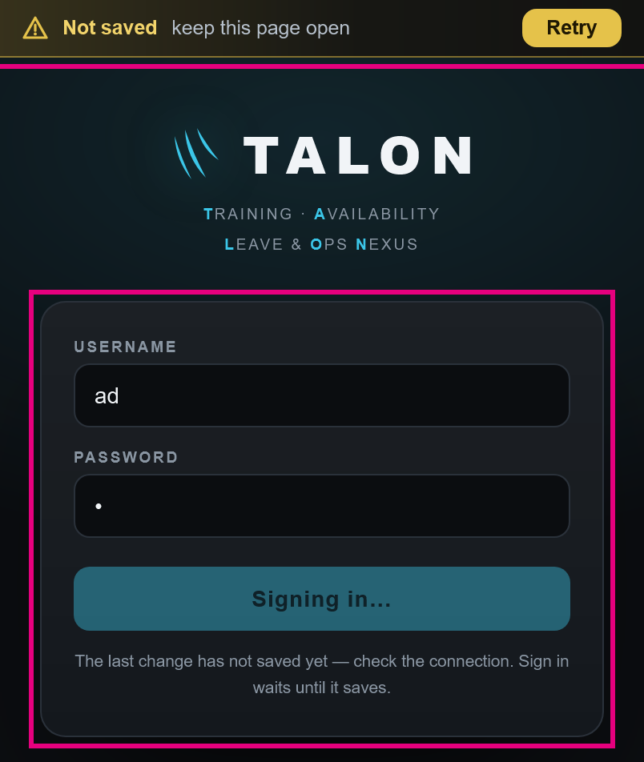<figcaption><b>Today, phone</b>: after Logout, the sign-in waits until the change saves.</figcaption></figure>
    </div>
  </section>

  <section id="b2">
    <h2>B2. Logout with an input open and words typed in it</h2>
    <p class="when"><b>When this happens</b>: you press Logout with an input window open and unsaved words in it.</p>
    <p><b>Today</b>: you are signed out at once and the words are lost, nothing asked. You ruled that Logout asks the window's own question first. Its words today are about closing the window, not about logging out.</p>
    <p class="rec">Recommended: at Logout the question and its button say Logout. The window's ✕ and Escape keep today's words.</p>
    <div class="words">
      <div>This input has unsaved changes. Log out and lose them? — <b>Discard and log out</b> · <b>Keep editing</b></div>
    </div>
    <div class="pair">
      <figure>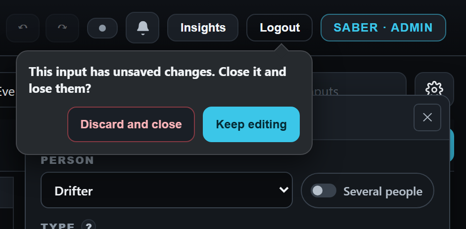<figcaption><b>Drawn, today's words</b>: "Close it and lose them?" — the button says close, and also logs you out.</figcaption></figure>
      <figure><figcaption><b>Drawn, recommended</b>: "Log out and lose them?"</figcaption></figure>
    </div>
  </section>

  <section id="b3">
    <h2>B3. Logout with an Admin → Users row open</h2>
    <p class="when"><b>When this happens</b>: a row is open with an unsaved change and you press Logout.</p>
    <p><b>Today</b>: signed out, the change lost, nothing asked.</p>
    <p class="rec">Recommended: asked, in the same shape as B2.</p>
    <div class="words">
      <div>The open row has unsaved changes. Log out and lose them? — <b>Discard and log out</b> · <b>Keep editing</b></div>
    </div>
    <div class="pair">
      <figure>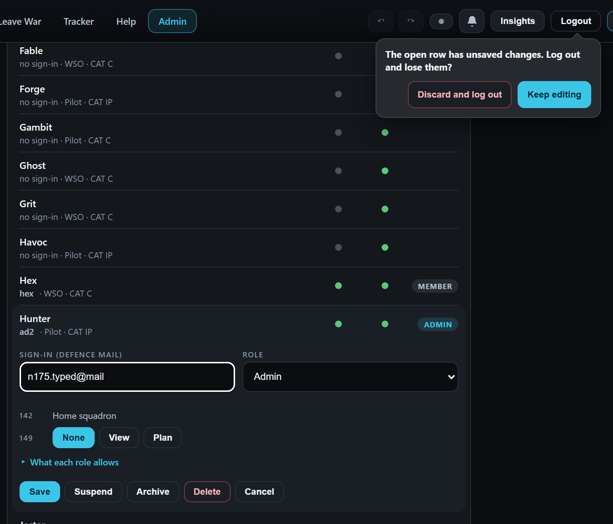<figcaption><b>Drawn</b>: the question hanging from Logout, the row open below.</figcaption></figure>
    </div>
  </section>

  <section id="b4">
    <h2>B4. Logout over a window that has no question of its own</h2>
    <p class="when"><b>When this happens</b>: you press Logout with a holiday's name typed in "Add a holiday", or with answers chosen in a day's OIL list and not saved. Only the input window has a question of its own.</p>
    <p><b>Today</b>: signed out, the typing or the answers lost, nothing asked. (Place a bid and the Tracker's Edit details cover Logout with their shade on a desktop, so they cannot be left this way.)</p>
    <p class="rec">Recommended: one question for all such windows, naming the window by its own title.</p>
    <div class="words">
      <div>“Add a holiday” has unsaved changes. Log out and lose them? — <b>Discard and log out</b> · <b>Keep editing</b></div>
    </div>
    <div class="pair">
      <figure>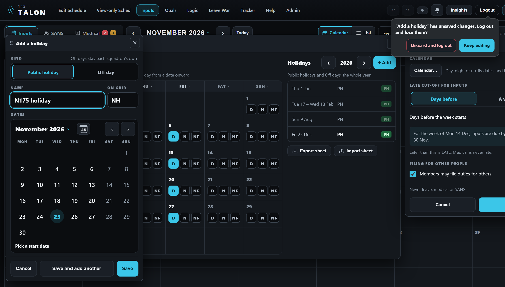<figcaption><b>Drawn</b>: three windows are open; the question names the one that holds the typing.</figcaption></figure>
    </div>
  </section>

  <section id="b5">
    <h2>B5. Reaching Logout on a phone with a window open</h2>
    <p class="when"><b>When this happens</b>: on a phone, Logout lives in the ☰ menu. An input window fills the screen and its title strip covers ☰. You ruled that Logout can be reached with a window open; nothing does that today.</p>
    <p class="rec">Recommended (first picture): the window stands just under the top bar, so ☰ stays in reach and Logout is where you already look for it. Nothing new is added to the screen.</p>
    <p class="note">Its cost: the window is 49px shorter. Undo, Redo, the bell, the squadron list and the member-view line become reachable over the window too, as they already are on a desktop; a pick from there is refused with the note at the foot. The other choice (second picture): a Logout button on the window's own strip beside ✕. It reaches only Logout, puts a second Logout on screen, and a thumb slip beside ✕ logs you out.</p>
    <div class="pair">
      <figure>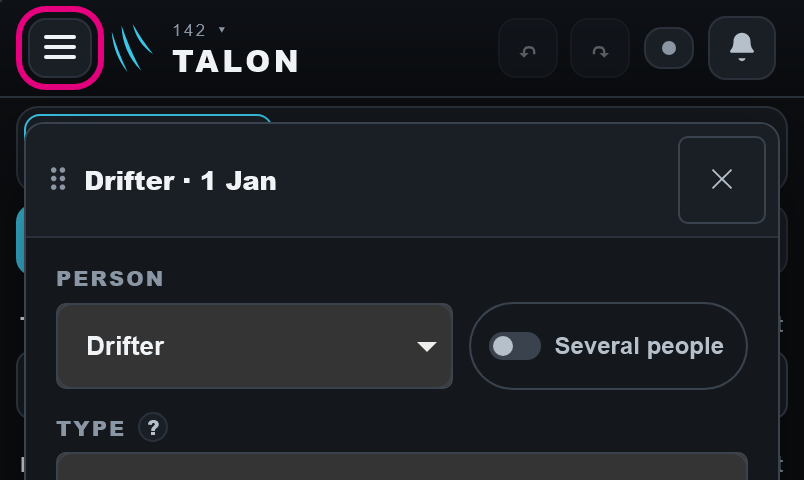<figcaption><b>Drawn, recommended</b>: the bar stays above the window; ☰ in reach.</figcaption></figure>
      <figure>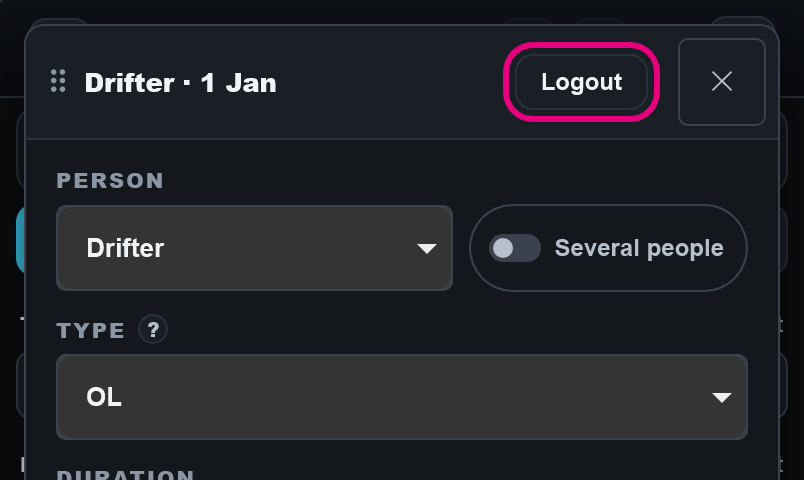<figcaption><b>Drawn, the other choice</b>: Logout on the window's strip.</figcaption></figure>
      <figure class="tall">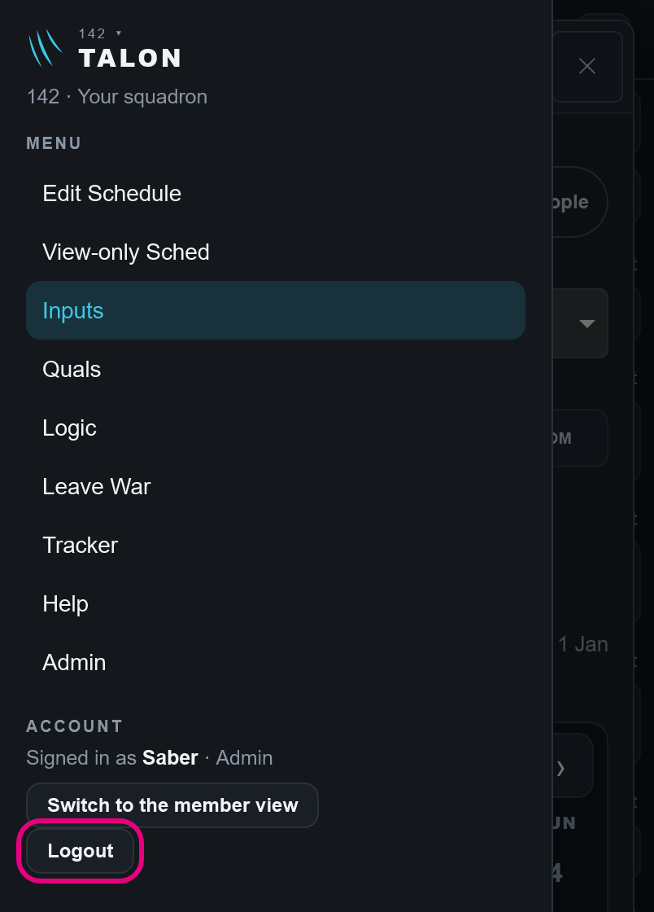<figcaption><b>Drawn, recommended</b>: ☰ opened over the window, Logout inside.</figcaption></figure>
    </div>
  </section>

  <section id="b6">
    <h2>B6. Undo with changes waiting on two other squadrons</h2>
    <p class="when"><b>When this happens</b>: you ruled that Undo reaches only the squadron in view and that the greyed button says why. A master admin has made changes on 142 and on 149 and is now looking at a third squadron.</p>
    <p class="rec">Recommended: the reason names each squadron that holds a change of yours, and only squadrons you can pick now.</p>
    <div class="words">
      <div>One: Pick 142 to undo your changes there.</div>
      <div>Two: Pick 142 or 149 to undo your changes there.</div>
      <div>Redo: Pick 142 to redo your changes there.</div>
    </div>
    <p class="note">These replace the draft you read ("Your 142 changes are on 142's Undo."): there is only one Undo button, so "142's Undo" names a thing the screen does not have. A change made on 149 does not clear a Redo waiting on 142; today's app already keeps it.</p>
    <div class="pair">
      <figure>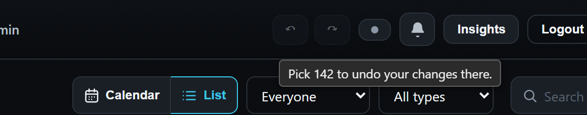<figcaption><b>Drawn, desktop</b>: the greyed Undo and its reason.</figcaption></figure>
    </div>
  </section>

  <section id="b7">
    <h2>B7. Undo of "+ New squadron" while that squadron is in view</h2>
    <p class="when"><b>When this happens</b>: Saber, on 142, makes squadron 150 with "+ New squadron", picks 150, and presses Undo.</p>
    <p><b>Today</b>: 150 is taken away under him. He lands back on 142's Admin page with only the passing note "Undid: adding a squadron" to say so.</p>
    <p class="rec">Recommended: making a squadron belongs to the squadron you were on when you made it (142). On 150 the Undo is greyed and says "Pick 142 to undo your changes there." So a squadron is never undone while you are standing in it.</p>
    <div class="pair">
      <figure class="tall"><figcaption><b>Today, phone</b>: after Undo, back on 142 with a passing note.</figcaption></figure>
    </div>
  </section>

  <section id="b8">
    <h2>B8. The greyed Undo on a phone</h2>
    <p class="when"><b>When this happens</b>: the greyed Undo's reason is shown when the mouse rests on it. A phone has no mouse: a tap and a long press both show nothing. You read on an iPhone, so today you cannot read why Undo is grey. This has been so for every greyed-Undo reason, not only the new one.</p>
    <p class="rec">Recommended: on a phone, a tap on a greyed Undo or Redo shows its reason as the app's plain passing note at the foot (not the grey "Blocked:" note, which is for a change of yours that was refused).</p>
    <div class="pair">
      <figure><figcaption><b>Today, phone</b>: Undo greyed; nothing says why.</figcaption></figure>
      <figure><figcaption><b>Drawn</b>: after a tap, the reason at the foot.</figcaption></figure>
    </div>
  </section>

  <section id="b9">
    <h2>B9. The refresh card when nothing is open</h2>
    <p class="when"><b>When this happens</b>: Hunter's move to 149 takes effect at midnight while he has the app open with no window open.</p>
    <p><b>Today</b>: the bar changes from 142 to 149 and his badge from Admin to Member, without a word. The only sign is a dot on the bell.</p>
    <p class="rec">Recommended: the card is shown all the same, so he knows why the app changed under him. One rule: whenever the squadron or his rights change without his press, the card.</p>
    <p class="note">For a man who is not moving, midnight shows nothing; pressed and confirmed. A posting out that ends his access keeps today's "Your access is suspended" screen. A posting to SANS changes nothing he can see, so nothing is shown.</p>
    <div class="pair">
      <figure><figcaption><b>Today, phone</b>: before midnight.</figcaption></figure>
      <figure>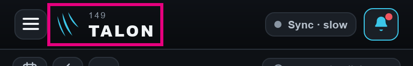<figcaption><b>Today, phone</b>: after midnight. 149, nothing said.</figcaption></figure>
    </div>
  </section>

  <section id="b10">
    <h2>B10. The refresh card's words, true on any day it is read</h2>
    <p class="when"><b>When this happens</b>: the card you approved says "You are 149's from today" and "took effect at midnight". A card raised at midnight is read the next morning, or two days later if the computer was left on. Then "from today" is no longer true.</p>
    <p class="rec">Recommended: one wording that is true whenever it is read. This changes words you approved.</p>
    <div class="words">
      <div><b>You are 149's now</b></div>
      <div>Your move to 149 took effect on Thu 16 Jul. Refresh and sign in again to carry on. Anything you hadn't saved is lost.</div>
    </div>
    <div class="pair">
      <figure><figcaption><b>Drawn, recommended</b>: the date in place of "today" and "midnight".</figcaption></figure>
      <figure><figcaption><b>The card you approved</b>.</figcaption></figure>
    </div>
  </section>

  <section id="b11">
    <h2>B11. Refresh while a save is waiting</h2>
    <p class="when"><b>When this happens</b>: the refresh card comes up while "Not saved" is showing.</p>
    <p><b>Today</b>: reloading the page while a save waits loses that change; only the browser's own "leave this page?" question stands in the way.</p>
    <p class="rec">Recommended: the card's Refresh button tries the waiting save once, then reloads. If the save still fails the change is lost, as the card already says.</p>
  </section>

  <section id="b12">
    <h2>B12. Five small cases, all recommended as they are today</h2>
    <p class="when"><b>When this happens</b>: each was on the readers' lists as a way to lose work at a pick. Pressed, none loses anything, so I recommend no change. Take them as one.</p>
    <div class="words">
      <div><b>Words typed in a day's note on Edit Schedule, the cursor still in it</b>: saved into 142's note, where they were typed.</div>
      <div><b>A figure typed in a Balances box and not left</b>: saved at the pick, with its line in the edit history.</div>
      <div><b>Words in Help's bug-report box</b>: stay in the box on both squadrons until sent.</div>
      <div><b>A calendar day's "+ Note" half-typed</b>: saved onto 142's day. Its window is one the guard will refuse a pick over, so this stops arising.</div>
      <div><b>A drag in progress</b>: on a phone a second finger on the squadron control does nothing while a puck is held. On a desktop a pick can only be made mid-drag by the keys (48 presses of Tab); the drag then changes nothing on either squadron.</div>
    </div>
  </section>

  <div class="told">
    <div class="label">Told, not asked</div>
    <ul>
      <li>"Your access has changed" cannot be raised by any press in this build: one browser tab never hears another's change until a reload. It will be proved by a test and walked at the database step.</li>
      <li>When the Tracker fails part-way through a switch, the same card is shown each time it happens.</li>
      <li>A door reached by the keyboard answers exactly as by the mouse, and the note is read out by a screen reader.</li>
      <li>Faults found while pressing, filed for the same builds, not questions: 142's OIL list stays usable under a bar reading 149 and writes 142's records; Quals keeps Done in the member view; on a phone a tap on ☰ over "Place a bid" closes the bid instead of opening the menu.</li>
    </ul>
  </div>
</main>

<script>
// tap a picture: fit to screen; tap again: full size (scroll to pan); tap again: close
document.addEventListener('click', function (e) {
  var z = document.querySelector('.zoom');
  if (z) {
    if (!z.classList.contains('big') && e.target.tagName === 'IMG') { z.classList.add('big'); return; }
    z.remove(); return;
  }
  var t = e.target;
  if (t.tagName === 'IMG' && t.closest('figure')) {
    var d = document.createElement('div'); d.className = 'zoom';
    var i = document.createElement('img'); i.src = t.src; i.alt = t.alt;
    d.appendChild(i); document.body.appendChild(d);
  }
});
document.addEventListener('keydown', function (e) { var z = document.querySelector('.zoom'); if (z && e.key === 'Escape') z.remove(); });
</script>
